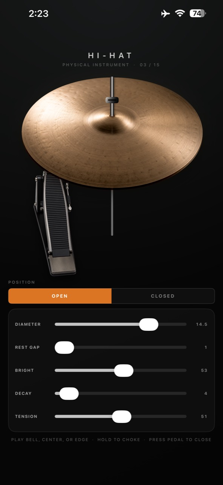

Strike
Move from a clear bell to the body of the bow and the explosive edge. Position, energy, and touch color every hit.
Physical instrument for iPhone + iPad
A playable hi-hat synthesized in real time. Strike the bell, bow, or edge. Scrape, choke, shape the hardware, and work an expressive pedal with your fingers.

The whole instrument
HI-HAT responds to where, how, and when you touch it. Articulations flow into one another instead of firing isolated recordings.
Move from a clear bell to the body of the bow and the explosive edge. Position, energy, and touch color every hit.
Drag across the surface for a continuous bronze friction sound that follows the speed and path of your finger.
Hold the cymbal to grab its ring. Keep one finger down and strike with another for tight, hand-muted hits.
Press for a chick, hold for closed pressure, and release quickly for a splash. Touch position changes leverage and speed.
Real-time physical synthesis
Vibrating plates, resonant modes, stick contact, rim motion, friction, damping, and cymbal collision are calculated while you play. A ringing hit can be caught by hand. An open note can tighten under the pedal. Repeated strikes keep their variation and motion.
Shape the hardware
Tune the character and the mechanics together. Your setup is saved automatically and ready the next time you play.
Built to be played
Finger drum, practice a rhythm, sketch a beat, or simply explore a responsive instrument. Put on headphones and touch the bronze.